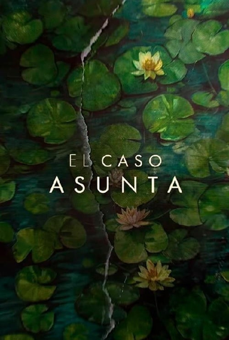

O Caso Asunta

Sinopse
O Caso Asunta narra a investigação do desaparecimento e assassinato da menina Asunta Basterra. Na série baseada em fatos reais, o casal Rosario (Candela Peña) e Alfonso Basterra (Tristán Ulloa) denuncia o desaparecimento da filha adotiva do casal, Asunta, em uma delegacia. Rapidamente, as investigações apontam que os próprios pais sejam culpados pelo crime. O caso tomou uma grande repercussão na mídia espanhola em 2013.
Elenco
- Candela Peña → Personagem: Rosario Porto
- Tristán Ulloa → Personagem: Alfonso Basterra
- Vianessa Castaños → Personagem: Romina
- María León → Personagem : Cristina